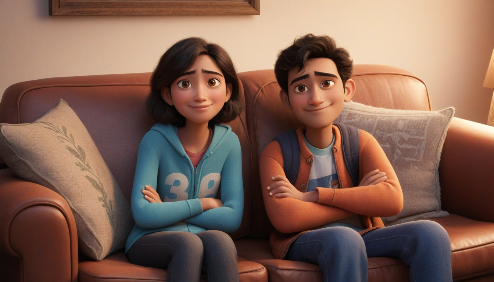

Some Memories


this is your next assigment do that well.
Well, I will call you darlin' and everything will be okay
'Cause I know that I am yours and you are mine
Doesn't matter anyway
In the night, we'll take a walk, it's nothing funny
Just to talk
Put your hand in mine
You know that I want to be with you all the time
You know that I won't stop until I make you mine
You know that I won't stop until I make you mine
Until I make you mine
Well, I have called you darlin' and I'll say it again, again
So kiss me 'til I'm sorry, babe, that you are gone and I'm a mess
And I'll hurt you and you'll hurt me and we'll say things we can't repeat
Put your hand in mine
You know that I want to be with you all the time
You know that I won't stop until I make you mine
You know that I won't stop until I make you mine
Until I make you mine
You need to know
We'll take it slow
I miss you so
We'll take it slow
It's hard to feel you slipping (You need to know)
Through my fingers are so numb (We'll take it slow)
And how was I supposed to know (I miss you so)
That you were not the one?
Put your hand in mine
You know that I want to be with you all the time
You know that I won't stop until I make you mine